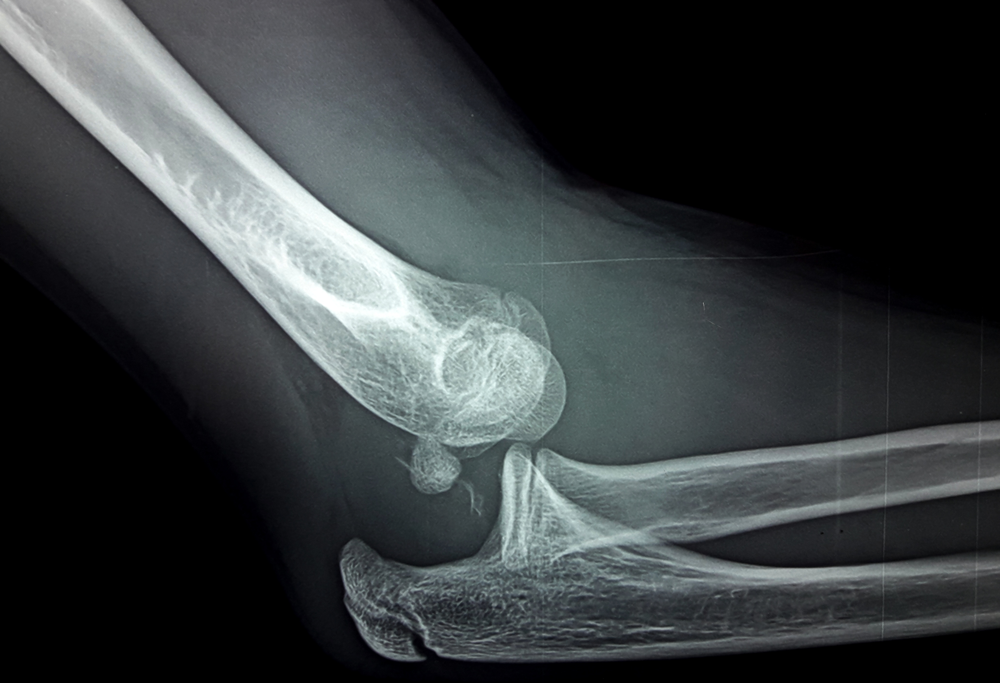
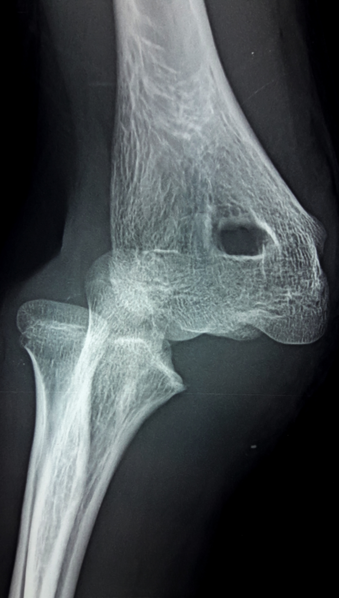
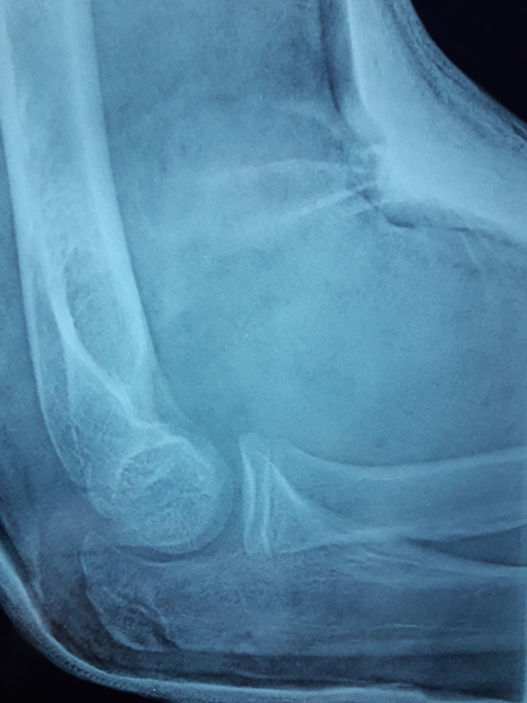
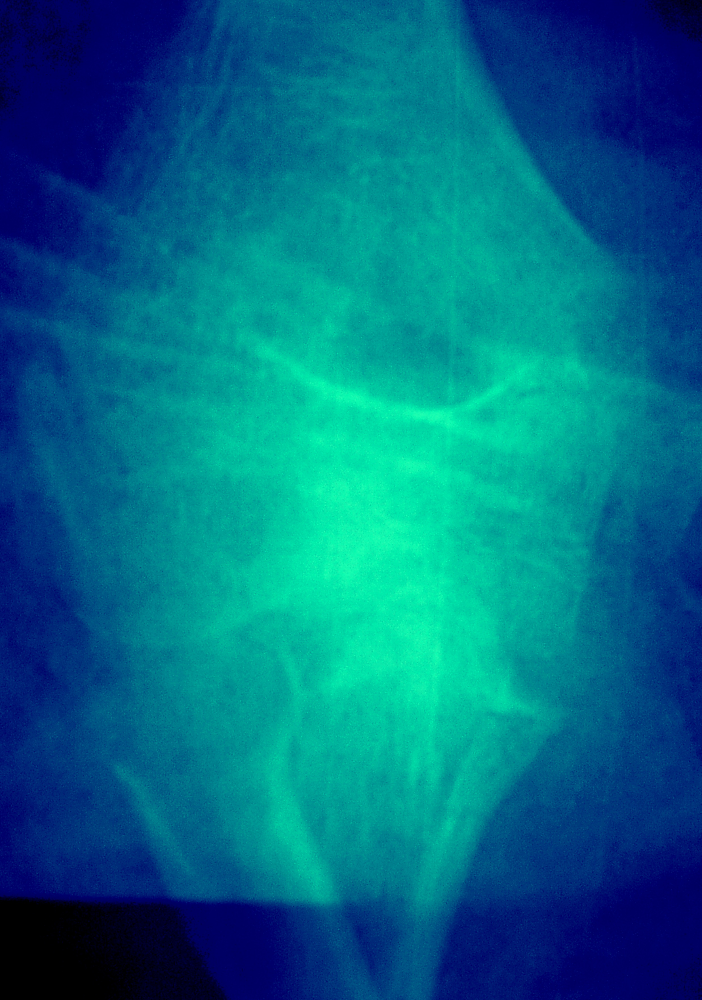
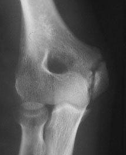
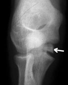
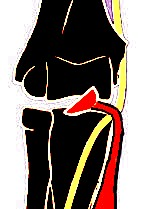

Coude
Cas Clinique 11
Traumatisme fermé du coude droit, chez un enfant de 14ans, suite à une chute de sa hauteur. L’examen a trouvé un élargissement antéro-postérieur du coude, une limitation de la flexion, une douleur exquise à la palpation, une perturbation des repères anatomiques du coude et une absence de troubles vasculo-nerveux.
Réponse 1
La perturbation des repères anatomique du coude oriente en premier, vers une luxation postérieure du coude droit.
Réponse 2
Luxation postérieure du coude droit associé à une fracture de l’épitrochlée qui est intra-articulaire.

Réponse 3
Réduction sous anesthésie générale et testing de la stabilité du coude sur le plan frontal.
Dans notre cas l'épitrochlée est revenue à sa place. Le maintient se fait par plâtre brachio-antébrachio-palmaire pendant 3 semaines. Il se fait en pronation afin de relacher les muscles épitrochléens.




Commentaire 1
La luxation du coude est de loin la plus fréquente des luxations chez l’enfant. Sa réduction est simple si elle est faite rapidement et elle ne donne pas de séquelles à distance dans les formes isolées.
Le plus souvent, elle fait suite à un traumatisme indirect l’enfant tombant sur la paume de la main, dans une position de l’avant-bras qui détermine le type de luxation et les éventuelles lésions associées. l’hyper-extension provoque des lésions internes, alors que la flexion entraîne plutôt des lésions externes.
Les luxations les plus fréquentes sont postérieures dans 1/3 des cas, ou postéro-latérales externes dans 2/3 des cas.
A l’examen clinique, son diagnostic repose sur la perte des repères anatomiques du coude (fig1).
En arrière trois repères osseux sont palpables:
• externe: épicondyle
• médian: olécrane
• interne: épi-trochlée
Ces repères dessinent une ligne droite en extension et un triangle en flexion à 90°.
Commentaire 2
Les fractures de l’épitrochlée sont associées à une luxation du coude dans au moins un tiers des cas et leur traitement dépend de la stabilité de la fracture après réduction de la luxation.
Par ailleurs, l’incarcération de l’épitrochlée peut être une cause d’irréductibilité si elle est passée inaperçue au départ, en sachant que la lésion du nerf cubital qui peut en résulter, est alors une complication iatrogène.
Commentaire 3
Le fragment épi-trochléen est arraché par le ligament latéral et par les muscles épi-trochléens qui s'insèrent sur lui et ont tendance à l'attirer vers le bas et à le faire basculer (fig7, fig8).


Le fragment peut s'incarcérer dans l'articulation entre cubitus et trochlée humérale, au moment du bâillement du coude ou de la luxation. On peut assister dans les grands déplacements à une compression du nerf cubital (fig9).

L’examen sous anesthésie générale est essentiel. Celui ci nous permet de tester la stabilité dans le plan frontal et de pratiquer des radiographies en valgus.
Références
Subasi M, Isik M, Bulut M, Cebesoy O, Uludag A, Karakurt L. Clinical and functional outcomes and treatment options for paediatric elbow dislocations Experiences of three trauma centres.
Injury. 2015; 46S: 14-8.Lieber J, Zundel SM, Luithle T, Fuchs J, Kirschner HJ. Acute traumatic posterior elbow dislocation in children.
J Pediatr Orthop. 2012; 21-B: 474-81.Little KJ. Elbow fractures and dislocations.
Orthop Clin North Am.2014;45:327–340Bégué T. Luxations du coude.
Encycl Méd Chir (Elsevier, Paris), Appareil locomoteur, 14-042-A-10, 1998, 10 p